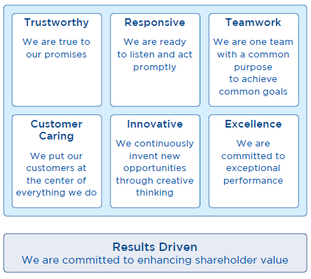
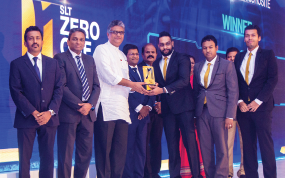
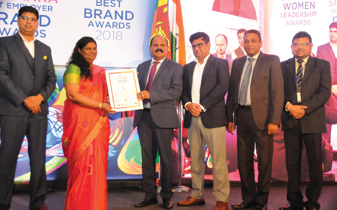

Management discussion and analysis
Institutional Capital


SLT’s institutional capital encompasses the aspects that are unique to the Company and permeate its culture, including corporate values, ethics, organisational knowledge, systems, processes, and intellectual property. They are primarily non-financial in nature and are vital to how SLT establishes and asserts its position as the country’s leading digital service provider and an emerging regional player.

Seven core values lie at the heart of SLT. These values are the foundation of our institutional capital and encompass every aspect of the corporate culture that permeates the SLT Group, including components such as organisational knowledge, our brand and reputation, our internal systems, and ethical standards.
The corporate culture of SLT is one of professionalism that encourages communication and engagement with employees. New employees are inculcated into this environment through our induction schemes and we host a variety of team building activities and refresher programmes that help to enrich and uphold our unique corporate culture. Employees are encouraged to make their own contributions to our culture through suggestion schemes, registers, and brainstorming sessions.
Innovation Platform
ECO BRIDGE
Excel Core Operation & Boost Revenue with Innovative Development and Grow the Enterprise (ECO BRIDGE)
In 2018, SLT launched the ECO BRIDGE platform. The platform enables employees to develop software solutions that facilitate organisational development and customer satisfaction, thereby enabling rapid innovation within the Organisation. Individuals or teams can propose solutions for process automation, cost reduction, or process turnover time that result in operational excellence and customer convenience, or even introduce novel ICT products for the consumer, SME, and enterprise business domains.
Organisational Transformation
As part of the ongoing process to transform SLT from a National Information and Communication Technology (ICT) solutions provider, into the most preferred Digital lifestyle Provider (DSP), the implementation of a customer centric/market-oriented business model and agile operational model is vital to acquiring customers and rewarding them with seamless connectivity and convenience through omni channel communication across all devices throughout the island.
A new organisational structure took effect in January 2019 that saw Sales and Regional Groups merged and a revised structure at the C-level. SLT regional administration will now be aligned with Sri Lanka government administrative districts, the resulting synchronisation of which will enable SLT to contribute to nationwide digital initiatives and development projects more effectively in-line with stakeholder requirements. The revised structure will see a renewed focus on developing and highly urbanised areas as part of efforts to increase customer reach and market penetration.
Empowering the Digital Economy
The development of the Nation’s economy is inexorably tied to the prevalence of access to ICT and digital infrastructure. Digital transformation is a key driver for sweeping change in today’s world; the digital market is paving the way for a global digital economy. As the national ICT solutions provider, SLT is keen to accelerate e-commerce market development in Sri Lanka. In 2018, SLT introduced “TelcoNext”, a knowledge sharing programme that aims to create the greater agility required to accelerate e-commerce market development. Under the theme “Empowering the Digital Economy, Together”, the programme was attended by various tech savvy professionals in the corporate, IT, BPO, BPM, and public sectors of Sri Lanka, as well as academics. Topics related to the Digital Economy were discussed, including global trends, Digital Sri Lanka initiatives, Internet of Things (IoT) implementation, hyperconnectivity, digital services, competitor behaviour, and the softwarisation and virtualisation of operators to tackle future demands.
Digital Health
Digitalisation brings about with it the potential to improve the quality of life and movement towards greater societal good. Together with the Health Information Society of Sri Lanka (HISSL), SLT held a knowledge sharing programme, “Digital Health: From Possibility to Reality” for various tech savvy medical professionals, ICT experts, software developers, vendors, and health industry related stakeholders in Sri Lanka. Speakers shared experiences and insights on digital health projects and topics including the Hospital Information System (HISL), monitoring children in the community using smartphones, gathering country wide data on the incidence of data electronically, and partnering the digital transformation of Sri Lanka.
Digital Excellence
SLT hosted the “Zero One Awards for Digital Excellence” for the second consecutive year in 2018. The programme recognises and rewards excellence in digital initiatives in the country that fulfil unmet needs in the marketplace. The 2018 edition awarded businesses and individuals in the areas of Best Digital-enabled Product/Service, Best Digital-Integrated Campaign, Best Community Empowerment Programme, Best Digital Media Agency, Best Website or Microsite, and Best Use of Mobile. Three Lifetime Awards were also presented to individuals for their exceptional contributions in the digital arena.

Network Development
Mobitel commenced the rollout of its largest 4G LTE expansion project yet to install over 1,600 LTE sites across the island. The project will culminate in Mobitel increasing its total 4G LTE footprint to approximately 2,600 LTE sites in the country by mid-2019, reaching 76% of the Sri Lankan population. Customers will benefit from peak broadband speeds of 105 Mbps and Voice over LTE (VoLTE) functionality that will enable them to make high quality voice calls over the LTE network. Mobitel seeks to expand its rural LTE coverage for up to 91% of the Sri Lankan population in 2019.
Mobitel has also been laying the groundwork for its 5G deployment with a public demonstration of the first 5G deployment over the 3.5 GHz spectrum in the country, as well as deploying 4.5G network technology that will significantly enhance user experience with burst speeds of up to 300 Mbps.
Taking another innovative step towards the digital transformation, Mobitel provided a state-of-the-art LTE Critical Communications solution to a leading container terminal operator for the first time in Sri Lanka.
Global Network Strategy
SLT is connected globally through five submarine cable systems: SEA-ME-WE 3, SEA-ME-WE 4, SEA-ME-WE 5, Bharat-Lanka and Dhiraagu-SLT. SLT is a key member of the SEA-ME-WE 5 cable consortium with a full cable landing station at Matara with a capacity to connect to the East and West cable segments at 24 Tbps each. The cable landing station at Matara is capable of interconnecting with other regional cable systems as well, providing Sri Lanka with the necessary infrastructure to become a regional connectivity hub.
Utilising global connectivity and enabling SLT’s efforts to become a regional digital hub, SLT will implement SD-WAN (software defined networking in a wide area network) in its global IP network, enabling the deployment of new virtual IP Points of Presence (PoPs) more quickly at a lower cost. Other initiatives for 2019 will see a 100 Gbps upgrade to the Bharat-Lanka cable system between Sri Lanka and India, and the establishment of a new global data centre in Matara that will act as an alternative to Singapore for latency sensitive traffic between the Middle East and Far East.
Galle Submarine Cable Depot
Formed as part of a joint venture between SLT and Singapore based Indian Ocean Cable Ship Private Limited (IOCPL), Galle Submarine Cable Depot Private Limited (GSCDPL) is one of the crucial components of SLT’s global network strategy. The South East Asia & Indian Ocean Cable Maintenance Agreement (SEAIOCMA) was signed in 2018 for an effective period of five years that will see GSCDPL provide warehousing facilities for over 40 regional submarine cable consortiums. Construction work and other formalities were completed and GSCDPL declared ready for service in January 2019. With plans for a cable ship to remain on standby at the Galle port to attend to submarine cable repairs in the region, service restoration times during submarine cable failures will dramatically reduce, thus improving international connectivity service in the South Asian Region.
Google I/O Extended Sri Lanka 2018
For the fifth time in Sri Lanka, Mobitel hosted the extended event of Google’s highly anticipated I/O event in 2018 at the Stein Studio Complex in Ratmalana. Google I/O is an annual global developer event and the local extension event brought together over 2,300 developers, ICT professionals, industry leaders, university students, and tech savvy innovators to experience the event via a live stream from San Francisco. Google CEO Sundar Pichai conducts the Google I/O keynote session, highlighting the latest product and platform innovations at Google. Technical in-depth sessions follow the keynote, focusing on building web, mobile, and enterprise applications with Google and technologies including Android, Chrome, Chrome OS, Google APIs, Google Web Toolkit and other Google related technologies.
Mobitel also used the event to demonstrate how blockchain technology can be used in real world applications by partnering with Radical Ledger to give participants a first-hand experience with blockchain technology; the registration process for Google I/O Extended 2018 utilised a blockchain based system. Upon registering for the event, a smart contract is created in the Ethereum based blockchain network with the registration details. This smart contract was then used as the anchor point in verifying the authenticity of the participant’s registration on the day of the event.
NB-IoT Industry Forum and Hackathon
Mobitel hosted Sri Lanka’s first ever industry forum and hackathon on Narrowband Internet of Things (NB-IoT). The industry forum aimed to connect innovators and decision makers in the industry and Government with global industry experts to share knowledge, experience, and inspiration. Speakers from around the world gave insights into the latest developments in NB-IoT technology and emerging trends that would impact stakeholders globally.
The second day of the event was a hackathon that aimed to challenge and inspire Sri Lankan developers to take advantage of the opportunities offered by the Internet of Things by creating solutions based around the technology. The SAS Ninja Labs’ Team won the hackathon grand prize of LKR 150,000 with their Uber style Parking Spotymizer.
Brand Image
SLT, in its capacity as the National ICT solutions provider, is held in high regard amongst Sri Lankans. Our investments have helped to establish the cutting edge National Backbone Network (NBN) and our numerous partnerships with the Government of Sri Lanka and various business partners have established our reputation as a provider of high-quality products and services. We boost the livelihoods of the people we serve through our island wide connectivity and strong regional presence.
Numerous accolades bestowed upon SLT are a testament to the work SLT has performed in its duty to uplift the Nation and its people into the digital era.
- Fitch Ratings National long-term rating “AA+(lka)”
- 12th Best Sri Lankan Brand – Interbrand 2017
- Sector Award for best performance and award for Consistent Commitment and Continuous Improvement – Economic category – Best Corporate Citizen Sustainability Awards 2018
- 20th Most Respected Entity – LMD Most Respected Entities 2018
- 16th Best Performing Corporate – Business Today Top 30 2017-2018
Mobitel is equally renowned as the National mobile service provider. Mobitel will play a significant role as SLT positions itself as a digital lifestyle services provider. Our customers will lead a truly connected digital life as we power the infrastructure to enable them to integrate all aspects of their lives, be it work or home and beyond, through the services we provide.
Awards and Recognition
SLT won numerous accolades in 2018. The National Project Management Excellence Awards conducted by the Project Management Institute (PMI) Sri Lanka Chapter awarded SLT the Gold award for the “Best Managed Project in Telecommunications Sector” for the Matara SEA-ME-WE5 Submarine Cable Landing Station Project. The awards aim to recognise individuals and organisations who make outstanding contributions to the development of the country through the introduction of advanced project management concepts, techniques, best practices, and theories.
SLT also received three awards at the prestigious Sri Lanka Best Employer Brand Awards in 2018 for Telecommunications Sector, Brand Leadership, and Women Leadership Excellence.
SLT also received the CNCI achievers award, and National business excellence award.

Information Security
SLT’s information security policy complies with the ISO/IEC 27001:2013 International Standard. SLT continually evaluates its infrastructure and takes the appropriate measures necessary to maintaining compliance.
Compliance
SLT takes every effort to comply with all rules, regulations, and standards where applicable. All company policies, procedures, and guidelines are developed in compliance with regulatory and statutory requirements, and separate regulatory and legal divisions monitor all regulatory and statutory ratifications. SLT complies with all Government regulations and adheres to the rules and regulations imposed on it as a listed company by the Colombo Stock Exchange (CSE). Our human resource practices comply with labour regulations and relevant statutory collateral, and employees are informed of relevant developments via the SLT Intranet portal. We also take steps to ensure the compliance of outsourced operations, such as making contributions to Employees’ Provident Funds (EPFs) and Employees’ Trust Funds (ETFs). Our activities are compliant with established guidelines on environmental protection.
Our compliance is audited by auditors internally and externally, and for the period under review, SLT did not default in relation to issues of non-compliance with laws and regulations pertaining to the provision and use of our products and services. No complaints were received regarding discordances on customer privacy.
Risks and contingencies
The Board of Directors bears total responsibility for the establishment and monitoring of the Group’s Risk Management Framework. The Audit Committee inspects management’s monitoring of compliance with the Group’s risk management processes. Aspects of financial risk management are covered under Note 4 to the Financial Statements. Any other extraneous aspects are discussed under Note 32 to the Financial Statements.